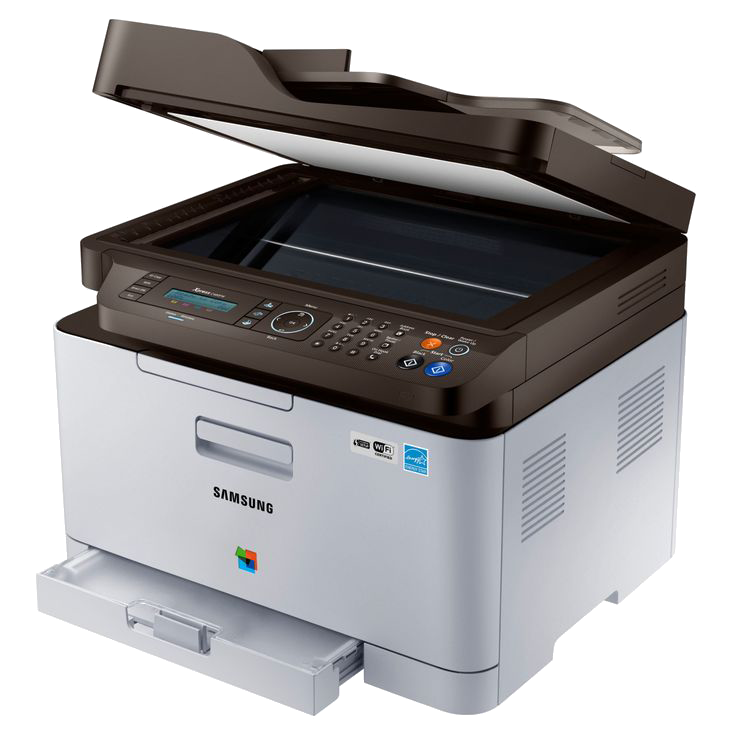

Грязная печать
Возможные причины:
- Неисправен картридж
- Износ термопленки или вала
- Повреждение прижимного резинового вала
- Повреждение шлейфа сканера

-
Замена термопленкияот 1900 Р
-
Замена тефлонового валаот 900 Р
-
Ремонт картриджаот 800 Р